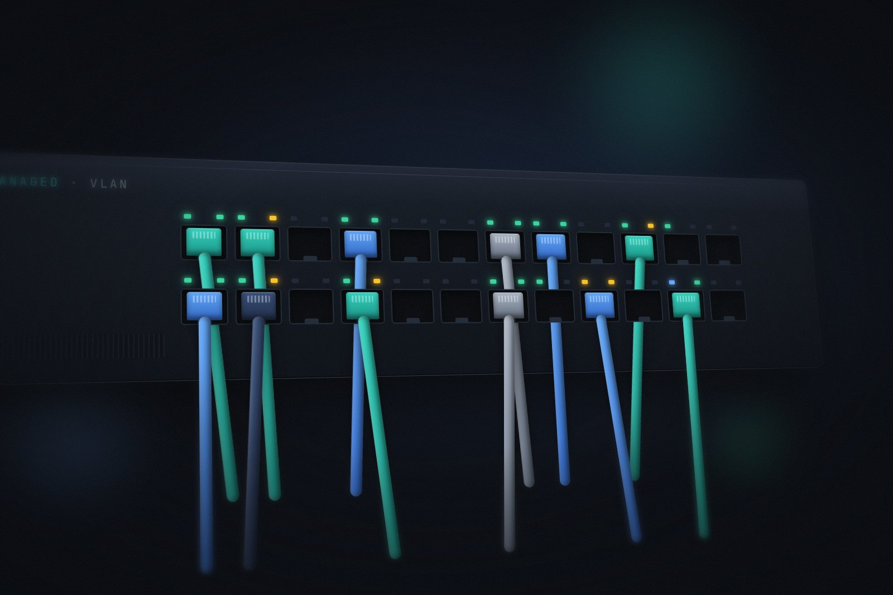

Microsoft 365 & Identity
Administered day to day across multiple client tenants at an MSP.
- Exchange Online
- Entra ID
- Intune
- SharePoint
Tier I Support · building towards 2nd line
Over two years of hands-on MSP experience across multiple Microsoft 365 tenants, owning issues from first contact to fix, and building towards 2nd line.
01 / About
I'm a Tier I Support Analyst & Dispatcher at Offsite Cloud, a managed service provider in Essex, where I've spent over two years supporting a range of client businesses. Day to day I administer Microsoft 365 across multiple tenants (Exchange Online, Entra ID, Intune and SharePoint), troubleshoot Windows endpoints, and handle tickets from first contact through to resolution or escalation.
Outside work I run a Proxmox homelab, which is where I build, break and fix things to deepen my understanding of virtualisation, networking and self-hosting.
I'm working towards 2nd line: taking ownership of more complex problems, digging into root causes and keeping on building my technical depth.

02 / Skills
The tools and platforms I use day to day, and the ones I'm building depth in through my homelab.
Administered day to day across multiple client tenants at an MSP.
03 / Projects & Lab
Outside work I run a Proxmox homelab to build hands-on experience with virtualisation, networking, Active Directory and monitoring.
A Proxmox VE homelab I started with no Linux command-line experience. It now runs an Active Directory lab on an isolated VLAN, a set of self-hosted services, and Prometheus and Grafana monitoring with alerts to Discord.
04 / Experience
July 2024 – Present
Offsite Cloud · Managed service provider, Essex
City & Guilds · Achieved with Distinction
05 / Certifications
City & Guilds · Achieved with Distinction ·
06 / Contact
If you'd like to talk Microsoft 365, homelabs or anything IT support, or just want to connect, message me on LinkedIn.